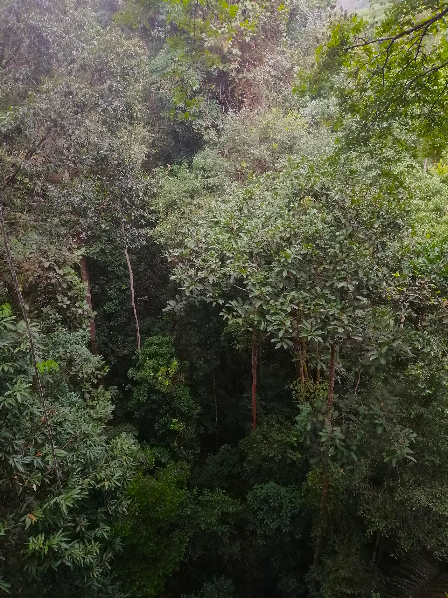

群落的结构
本期导读
种间关系 · 空间结构 · 生态位

视频原话 · 导读3 句
- 同学们好！这节课梳理人教版选择性必修二第二章第一节——群落的结构。7.3s
- 高考常考种间关系的判断与曲线、群落的垂直结构和水平结构、生态位，以及土壤小动物类群丰富度的调查。10.6s
- 我们按八个考点梳理，每个考点都讲清楚怎么考、怎么做。5.5s
物种组成与丰富度01#
群落：相同时间聚集在一定地域中各种生物种群的集合
物种组成：区别不同群落的重要特征
物种丰富度：群落中物种数目的多少
越靠近热带，丰富度一般越高
越靠近热带，丰富度一般越高
易错
丰富度看物种数目，不看个体数目；群落包括该地域的全部生物（动物、植物、微生物）
视频原话4 句
- 考点一，群落的物种组成。在相同时间聚集在一定地域中各种生物种群的集合，叫做生物群落，简称群落。10.6s
- 群落的物种组成是区别不同群落的重要特征，也决定了群落的性质。6.4s
- 一个群落中的物种数目，称为物种丰富度。一般越靠近热带地区，物种丰富度越高。8.1s
- 易错：物种丰富度说的是物种数目的多少，不是某种生物个体数目的多少；群落包括这一地域的全部生物，动物、植物、微生物都算。12.5s
优势种02#
优势种
① 数量很多
② 对其他物种影响很大
② 对其他物种影响很大
例：森林中的高大乔木
决定林下的光照和湿度，影响林下植物和动物的生存
物种组成不是固定不变的：随时间和环境变化，优势种可能失去优势
易错
优势种要同时满足数量多和影响大；数量多但影响小的不是优势种
视频原话4 句
- 考点二，优势种。在群落中，有些物种数量很多，对群落中其他物种的影响很大，它们就是优势种。9.8s
- 比如森林群落中的高大乔木，决定了林下的光照和湿度，影响着林下植物和动物的生存。8.2s
- 群落中的物种组成不是固定不变的，随着时间和环境的变化，原来的优势种可能逐渐失去优势。9.0s
- 易错：优势种不只看数量多，还要看对其他物种的影响大；数量多但影响小的物种，不是优势种。9.4s
五种种间关系03#
| 关系 | 特点 | 实例 |
|---|---|---|
| 原始合作 | 双方受益，分开后各自能独立生活 | 海葵与寄居蟹 |
| 互利共生 | 相互依存，分开后至少一方不能独立生活 | 豆科植物与根瘤菌 |
| 种间竞争 | 争夺相同的资源和空间 | 大草履虫与双小核草履虫 |
| 捕食 | 一种生物以另一种生物为食 | 猞猁与雪兔 |
| 寄生 | 从另一种生物体内或体表摄取养分 | 蛔虫与人、噬菌体与细菌 |
易错
原始合作 vs 互利共生：看分开后能不能独立生活
视频原话6 句
- 考点三，种间关系。高考要求掌握五种。4.8s
- 原始合作：两种生物共同生活在一起，双方都受益，但分开后各自也能独立生活，比如海葵和寄居蟹。10.3s
- 互利共生：两种生物长期共同生活在一起，相互依存，分开后至少一方不能独立生活，比如豆科植物和根瘤菌。11.1s
- 种间竞争：争夺相同的资源和空间，比如大草履虫和双小核草履虫；捕食：一种生物以另一种生物为食。10.4s
- {寄生|brown}：一种生物从另一种生物的体内或体表摄取养分，比如蛔虫和人、噬菌体和细菌。8.5s
- 易错：原始合作和互利共生的区别，就看分开后能不能独立生活。6.7s
种间关系曲线04#
互利共生：同步
捕食：交替波动
竞争：此消彼长
题目给出两种生物的数量变化曲线，判断种间关系
解题方法
同步变化 → 互利共生；交替波动 → 捕食；此消彼长 → 竞争
视频原话5 句
- 考点四，种间关系曲线。高考常给出两种生物数量随时间变化的曲线，让你判断关系。9.0s
- 互利共生：两条曲线同步变化，同增同减，“同生共死”。5.9s
- 捕食：两条曲线不同步地周期性波动，先增先减的是被捕食者。6.6s
- 种间竞争：一种数量增加，另一种减少，甚至被淘汰，呈现“此消彼长”。7.0s
- 解题方法：同步变化是互利共生，交替波动是捕食，此消彼长是竞争。7.2s
垂直结构与水平结构05#
植物分层：光照
动物分层：栖息空间和食物条件
易错
竹林中竹子高低错落不是垂直结构——竹子是一个种群；空间结构是群落的特征
视频原话5 句
- 考点五，群落的空间结构，包括垂直结构和水平结构。5.7s
- 垂直结构：在垂直方向上，大多数群落都具有明显的分层现象。植物的分层主要与对光的利用有关。9.9s
- 植物分层为动物创造了多种多样的栖息空间和食物条件，所以动物也有分层现象。7.9s
- 水平结构：由于地形变化、土壤湿度和盐碱度的差异、光照强度不同等因素，生物常呈镶嵌分布。9.7s
- 易错：竹林中的竹子高低错落，不是群落的垂直结构，因为竹子是一个种群；空间结构是群落的特征。9.8s
群落的季节性06#
- 阳光、温度、水分随季节变化
- →群落的外貌和结构有规律地变化
春
植物发芽、开花
夏
枝叶繁茂，动物繁殖
秋
草本枯黄，候鸟南迁
冬
多数植物休眠
考法
答题模板：环境因素随季节变化 → 群落的外貌和结构随之发生有规律的变化
视频原话3 句
- 考点六，群落的季节性。由于阳光、温度和水分等随季节而变化，群落的外貌和结构也会随之发生有规律的变化。11.3s
- 比如，一些草原植物在春季发芽开花、秋季枯黄；候鸟在不同季节迁来迁去。8.0s
- 考法：季节性是群落的特征，常和空间结构一起考。答题时说清环境因素随季节变化，导致群落的外貌和结构随之变化。12.6s
生态位07#
生态位：物种在群落中的地位或作用——空间位置、占用资源、与其他物种的关系
植物：出现频率、种群密度、植株高度、与其他物种的关系
动物：栖息地、食物、天敌、与其他物种的关系
考法
每种生物占据相对稳定的生态位 → 充分利用环境资源，是协同进化的结果
视频原话5 句
- 考点七，生态位。一个物种在群落中的地位或作用，包括所处的空间位置、占用资源的情况，以及与其他物种的关系。11.3s
- 研究植物的生态位：出现频率、种群密度、植株高度，以及与其他物种的关系。7.5s
- 研究动物的生态位：栖息地、食物、天敌，以及与其他物种的关系。6.6s
- 两个物种的生态位重叠越多，对资源的争夺就越激烈，种间竞争越强。6.9s
- 考法：群落中每种生物都占据着相对稳定的生态位，有利于不同生物充分利用环境资源，这是协同进化的结果。10.7s
土壤小动物丰富度08#
特点：活动能力较强、身体微小 → 不用样方法、标记重捕法
采集调查：取样器取样法
统计丰富度：
· 记名计算法：个体较大、种群数量有限的物种
· 目测估计法：按多度等级（非常多、多、较多、较少、少、很少）估计
· 记名计算法：个体较大、种群数量有限的物种
· 目测估计法：按多度等级（非常多、多、较多、较少、少、很少）估计
诱虫器：利用趋暗、趋湿、避高温；体型较小的用吸虫器
易错
电灯是为了驱赶小动物向下，不是利用趋光性；收集瓶中加入体积分数为 70% 的酒精
视频原话5 句
- 考点八，研究土壤中小动物类群的丰富度。土壤小动物活动能力较强、身体微小，不适合用样方法和标记重捕法。11.3s
- 常用取样器取样的方法进行采集和调查。4.2s
- 统计丰富度有两种方法：记名计算法，用于个体较大、种群数量有限的物种；目测估计法，按预先确定的多度等级来估计。11.4s
- 用诱虫器采集时，利用了土壤小动物趋暗、趋湿、避高温的特点；体型较小的，可以用吸虫器采集。9.5s
- 易错：诱虫器上方的电灯是为了驱赶小动物向下进入收集瓶，不是利用趋光性；收集瓶中通常加入体积分数为70%的酒精。12.3s
易错速查✓
先自己判断，再点按钮查看对错与解析。
- 1物种组成是区别不同群落的重要特征说法正确。
- 2物种丰富度指某种生物的个体数目说法错误：指群落中物种数目的多少
- 3豆科植物与根瘤菌是原始合作说法错误：是互利共生
- 4竹林中竹子高低错落体现垂直结构说法错误：竹子是一个种群，不是群落
- 5生态位重叠越多，种间竞争越激烈说法正确。
- 6诱虫器利用了土壤小动物的趋光性说法错误：利用趋暗、趋湿、避高温
种间关系看曲线，生态位看资源！
视频原话 · 易错速查5 句
- 最后，用六道判断题检验一下。3.6s
- 判断一：物种组成是区别不同群落的重要特征？对。判断二：物种丰富度指某种生物的个体数目？错，指物种数目。12.6s
- 判断三：豆科植物与根瘤菌是原始合作？错，是互利共生。判断四：竹子高低错落体现垂直结构？错，竹子是一个种群。13.5s
- 判断五：生态位重叠越多，竞争越激烈？对。判断六：诱虫器利用了趋光性？错，利用趋暗、趋湿、避高温。12.3s
- 八个考点串成一条线：种间关系看曲线，生态位看资源。我们下期再见！7.6s
图片来源
图片来源：Wikimedia Commons —— Chamberlain of Nilai《Rainforest canopy and understory layers》CC BY-SA 4.0
Photo: Chamberlain of Nilai, CC BY-SA 4.0